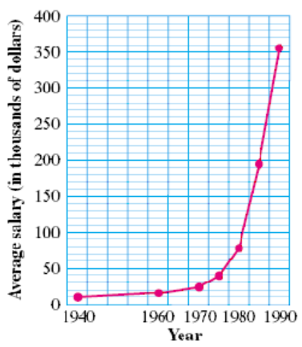
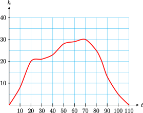
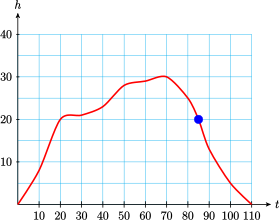
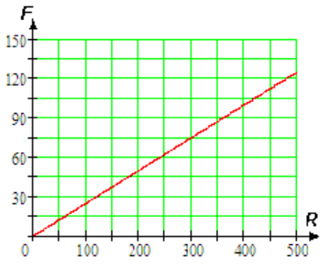

A variable is a numerical quantity that changes over time or in different situations.
Section 1.1 Variables
¶Subsection What is a Variable?
We can show the values of a variable in a table or a graph.
Example 1.1
Life expectancy is the average age to which people will live. The table below shows that your life expectancy depends on the year of your birth. Thus, life expectancy is a variable.
| Year Born | Life Expectancy |
| \(1900\) | \(49\) |
| \(1910\) | \(51\) |
| \(1920\) | \(58\) |
| \(1930\) | \(59\) |
| \(1940\) | \(63\) |
| \(1950\) | \(68\) |
| \(1960\) | \(70\) |
| \(1970\) | \(71\) |
| \(1980\) | \(74\) |
| \(1990\) | \(75\) |
To what age could people born in 1940 expect to live?
In what year did people's life expectancy reach 70 years of age?
Solution
People born in 1940 lived to 63 years of age on average.
Life expectancy reached 70 years of age in 1960.
Example 1.2
The graph below shows the average annual salaries of NFL football players, starting in 1940. The average salary of NFL football players is a variable.

Use the graph to estimate the average annual salary of NFL football players in 1975.
By how much did salaries increase from 1975 to 1980?
Solution
In 1975, the average NFL player's salary was $40,000.
-
In 1980, the average salary was $80,000, so salaries had increased from $40,000 to $80,000, or by
\begin{equation*} $80,000 - $40,000 = $40,000 \end{equation*}
Subsubsection Reading Questions
1
A numerical quantity that changes over time or in different situations is called a .
Answer
variable
2
We can show the values of a variable in a or a .
Answer
table, graph
Look Closer
By displaying the values of a variable in a table or a graph, we sometimes see trends or patterns in those values. For example, we see that life expectancy has been increasing slowly over time, and that salaries of NFL football players have been increasing ever more rapidly since 1940.
Subsection Using Letters to Represent Variables
Imagine that you are traveling by airplane to another city. The table below shows the altitude of the airplane, in thousands of feet, at ten-minute intervals after take-off. The two quantities shown in the table, time and altitude, are both variables.
| Time (min) | \(0\) | \(10\) | \(20\) | \(30\) | \(40\) | \(50\) | \(60\) | \(70\) | \(80\) | \(90\) | \(100\) | \(110\) |
| Altitude (1000 ft) | \(0\) | \(8\) | \(20\) | \(21\) | \(23\) | \(28\) | \(29\) | \(30\) | \(25\) | \(13\) | \(5\) | \(0\) |
We often use a letter as a kind of short-hand to represent a variable. For this example, we use the following letters:
\begin{equation*}
t~~~ \text{stands for the time elapsed after take-off}
\end{equation*}
\begin{equation*}
h~~~ \text{stands for the plane's altitude at that time}
\end{equation*}
We can get a better feel for the variables by plotting them on a graph. In the figure below, the values of \(t\) are displayed on the horizontal scale, or axis, and the values of \(h\) are shown on the vertical axis. The graph shows how the values of \(h\) are related to the values of \(t\text{.}\)

Example 1.3
- What is the value of \(h\) when \(t=85\text{?}\) What do these values mean in this situation?
- When is the plane descending?
Solution
-
The graph shows that \(h\) is approximately 20 when \(t=85\text{.}\) This means that at 85 minutes into the flight, the plane's altitude is about 20,000 feet.
 - The plane is descending when its altitude is decreasing. On the graph, \(h\) begins to decrease at \(t=70\) and continues decreasing until \(t=110\text{.}\) Thus, the plane is descending from the 70th minute until the end of the flight at 110 minutes.
Subsubsection Reading Questions
3
We often use as a shorthand to represent variable quantities.
Answer
letters
4
Which variable is displayed on the vertical axis in Example 3?
Answer
altitude
Look Ahead
It would be useful if we could discover a formula or rule to help us predict the values of an interesting variable.
Subsection Connections Between Variables
Sometimes there is a simple mathematical relationship between the values of two variables.
Example 1.4
Fernando plans to share an apartment with three other students next year. The table shows his share of the rent for apartments of various prices.
| Rent | \(280\) | \(300\) | \(340\) | \(360\) | \(400\) | \(460\) | \(500\) |
| Fernando's share | \(70\) | \(75\) | \(85\) | \(90\) | \(100\) | \(\blert{?}\) | \(\blert{?}\) |
- Fill in the blanks in the table. Describe in words how you found the unknown values.\begin{equation*} \blert{\text{Divide the rent by 4}} \end{equation*}
- Write a mathematical sentence that gives Fernando's share of the total rent.\begin{equation*} \blert{\text{Fernando's share}=\text{Rent}\div 4} \end{equation*}
- The total rent and Fernando's share are variables. Let \(R\) stand for the total rent, and let \(F\) stand for Fernando's share. Using these letters, write a formula for Fernando's share of the rent.\begin{equation*} \blert{F=R \div 4} \end{equation*}
-
Plot the points from the table and connect them with a smooth curve. Extend your line so that it reaches across the entire grid, not just the points that you plotted.

A formula relating two variables is a type of equation, and an equation is just a statement that two quantities are equal.
By studying the values in a table, we may be able to find a relationship between the values, and then write an equation relating the two variables.
Example 1.5
Write an equation that relates the two variables in the table.
| \(x\) | \(5\) | \(10\) | \(15\) | \(20\) | \(25\) |
| \(y\) | \(2\) | \(7\) | \(12\) | \(17\) | \(22\) |
Solution
The two variables are \(x\) and \(y\text{.}\) Each column of the table shows a related pair of values. Notice that 2 is 3 less than 5, 7 is 3 less than 10, and so on. That is: \begin{align*} 2 \amp = 5-3, \amp\amp 7 = 10-3\\ 12\amp = 15-3, \amp\amp 17 = 20-3 \end{align*} and so on. In each column, we can find \(y\) by subtracting 3 from \(x\text{.}\) Thus, \(y=x-3\text{.}\)
Subsubsection Reading Questions
5
A statement that two quantities are equal is called an .
Answer
equation
Subsection Skills Warm-Up
Subsubsection Exercises
Choose the correct arithmetic operation (addition, subtraction, multiplication, or division) and explain how to answer the question.
1
An air conditioner keeps the inside temperature \(16\degree\) cooler than the outside temperature. If the outside temperature is \(90\degree\text{,}\) how can you find the inside temperature?
2
Tom's recipe for punch calls for 3 times as much fruit juice as soda. If he has half a gallon of soda, how can he find the amount of fruit juice he needs?
3
A clothesline should be 2 feet longer than the distance between the supporting poles so that it can be tied at each end. If the poles are 20 feet apart, how can you find the length of the clothesline?
4
The weight of a bridge is supported equally by 8 pillars. If the bridge weighs one million tons, how can you find the weight each pillar must support?
5
Katrin has 4 hours to complete both her math and geography homework. If her math assignment takes \(2\dfrac{1}{2}\) hours, how can she calculate how long she has for geography?
6
The cost of leasing a compact car is 63% the cost of a luxury car. If the lease on the luxury car is $500 per month, how can you find the cost of leasing the compact car?